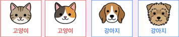
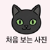
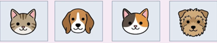
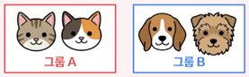

회귀, 분류, 군집의 개념부터 구체적 예시, 학습 유형, 그리고 도형 및 동물 캐릭터 분석까지 완벽 정리
"얼마?"
연속적인 숫자 값을 예측
예: 집값, 온도, 매출 예측
정답: 숫자(연속값) ➡️ 지도학습
"어디에 속해?"
정해진 카테고리 중 하나
예: 합격/불합격, 개/고양이
정답: 범주(카테고리) ➡️ 지도학습
"누가 비슷해?"
비슷한 데이터끼리 자동
예: 고객 세분화, 문서 분류
정답: 없음(탐색형) ➡️ 비지도학습
공부를 많이 할수록 점수가 올라갈까?
| 학습시간(h) | 시험점수 |
|---|---|
| 2 | 55 |
| 4 | 65 |
| 6 | 78 |
| 8 | 90 |
날씨가 더울수록 아이스크림이 잘 팔릴까?
| 기온(°C) | 판매량(개) |
|---|---|
| 15 | 120 |
| 22 | 250 |
| 28 | 380 |
| 33 | 500 |
분류의 핵심: 미리 정해진 카테고리 중 하나에 "배정"

모든 데이터에 정답을 알려주며 학습시킴.

군집의 핵심: 비슷한 것끼리 스스로 "발견"

인공지능은 이 이미지들이 무엇인지 모름.

※ 그룹 이름은 AI가 모름
정답이 있다 ➡️ "어디에 속해?"
학습 데이터 (정답 레이블 있음)
⬇️ 학습 완료 ➡️ 새 도형이 오면?
이미 정해진 카테고리(별/삼각형/사각형)에 새 도형을 "배정" 하는 것
정답이 없다 ➡️ "누가 비슷해?"
데이터 (정답 없음 X)
⬇️ 모양 기준(각 그룹별 2개씩, 서로 다른 색상)으로 묶으면?
같은 데이터도 어떤 특징에 주목하느냐에 따라 군집 결과가 달라질 수 있다!
같은 데이터: (모양과 색상이 섞임)
"모양 같으면 같은 그룹"
➡️ 3개 그룹 (모양 기준)
"색깔이 같으면 같은 그룹"
➡️ 4개 그룹 (색깔 기준)
| 구분 | 회귀 (Regression) | 분류 (Classification) | 군집 (Clustering) |
|---|---|---|---|
| 목표 | 연속적 숫자 예측 | 카테고리 예측 | 유사 데이터 묶기 |
| 정답 유무 | 있음 (숫자) | 있음 (범주) | 없음 |
| 학습 유형 | 지도학습 | 지도학습 | 비지도학습 |
| 예시 | 집값, 온도, 매출 | 스팸 판별, 질병 진단 | 고객 세분화, 문서 묶기 |
| 출력 | 숫자 (예: 3.5억원) | 범주 (예: 합격) | 그룹 (예: 그룹A) |
| 핵심 질문 | "값이 얼마야?" | "어디에 속해?" | "누가 비슷해?" |